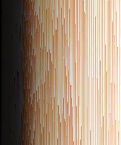
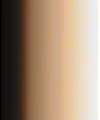
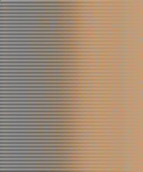
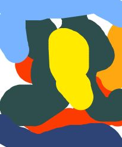

This project involves several different experements involving image processing using java's library "BufferedImage"
This project uses m.java to store the main method, which defines a "processor" object, to process input and create new files as output
creates a 1D array that stores the base 255 colour values of each pixel in an image
This method creates an array of pixel objects based on the flattened array. pixel objects store base 255 colour values, rgb values derived from the base 255, and brightness(adjusted for human vision)
This method uses the inbuilt java arrays.sort() method to sort the base 255 colour values of an image

This method uses selection sort to sort the image's pixel array by brightness

This method uses selection sort to sort the image's pixel array into a checkerboard pattern based on maximising contrast using the WCAG Weber contrast formula

This method maps an array of pixels from one image onto a brightness map (where each pixel in an image is given a brightness ranking) of another image. This is best used in conjunction with sort 2, to essentially recolour an image using the colours of another image, based on brightness. This algorithm is inspired by the "Obamify" algorithm created by Spu7Nix
https://github.com/Spu7Nix